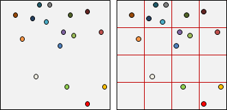
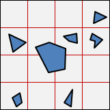
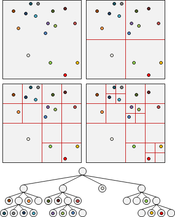
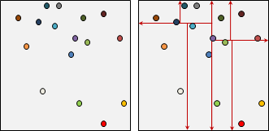
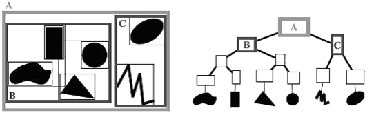

Region資料結構: R-Tree
R-Tree

Bounding Volume Hierarchy與B-Tree合體。
Region資料結構: Uniform Grid
楔子
請你嘗試發掘，這一系列的資料結構是為了解決什麼問題呢？
Uniform Grid
嗯，就是方格紙。將整個世界劃分為等寬方格。
實作方式是一個二維陣列，對應方格紙。陣列每一格是一個串列，對應每個方格包含的資料。
資料可以是任何東西，例如點、線段、三角形。
如果資料跨據多個格子，那麼可以同時儲存於多個格子，或者只儲存於其中一個格子。隨你開心。
插入、刪除、搜尋的時間複雜度是O(N)，N為資料數量；然而，串列長度通常遠少於N，因此這種時間複雜度標記法缺乏意義。
Region資料結構: Quadtree
Bitree / Quadtree / Octree / Hextree
二元樹、四元樹、八元樹、十六元樹，分別是一、二、三、四維的版本。
以四元樹為例：分割平面為四等分，視情況可以遞迴分割下去，越分越細。
資料放在樹葉。資料可以是任何東西，例如點、線段、三角形。
插入、刪除、搜尋的時間複雜度是O(N)，N為資料數量；然而，樹的高度通常遠少於N，因此這種時間複雜度標記法缺乏意義。確切的時間複雜度難以估計，取決於樹深與分枝數。
UVa 297 806 11941 11948
Region資料結構: k-Dimensional Tree
k-Dimensional Tree
額外繪製垂直線、水平線來分割區域。由於概念類似KD-Tree，所以大家沒有另起他名，直接沿用舊名。
此處的KD-Tree，注重每筆資料的邊界範圍；原本的KD-Tree，注重每個座標點的位置先後順序。兩者用途不一樣。
採top-down方式，依照某一個座標軸排序所有資料（通常是跨距最廣的那個座標軸），將資料等分為左右兩堆，遞迴分割下去。
插入、刪除、搜尋的時間複雜度是O(N)，N為資料數量；然而，樹的高度通常遠少於N，因此這種時間複雜度標記法缺乏意義。
缺點是：資料跨區時，不知該安置於哪區。除非資料是點。
Region資料結構: Bounding Volume Hierarchy
Bounding Interval Hierarchy / Bounding Region Hierarchy / Bounding Volume Hierarchy
BIH、BRH、BVH分別是一、二、三維的版本。
採top-down方式，依照某一個座標軸排序所有資料（通常是跨距最廣的那個座標軸），將資料等分為左右兩堆，遞迴分割下去。
插入、刪除、搜尋的時間複雜度是O(N)，N為資料數量；然而，樹的高度通常遠少於N，因此這種時間複雜度標記法缺乏意義。
優點是：不必煩惱該安置於哪區。可以旋轉節點，令樹平衡。
UVa 12312 ICPC 7605
Region資料結構: R-Tree
R-Tree
Bounding Volume Hierarchy與B-Tree合體。